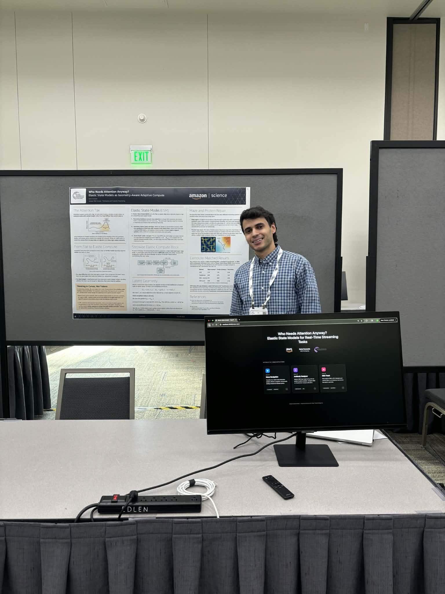

Abstract. Elastic State Models (ESM) add adaptive computation to a streaming state-space backbone. At each timestep, the backbone proposes a latent update and exposes a per-step objective that remains defined at inference time. A small gate converts the per-step error into an integer inner depth $K_t \in \{0,\dots,K_{\max}\}$ under an explicit compute penalty. When $K_t > 0$, ESM performs a short latent refinement loop using metric-preconditioned gradients and trust-region clipping. In maze navigation and protein loop repair, the refinement concentrates around bottlenecks and distorted regions. Compute-matched results reported on the poster show improved performance at lower average compute than a Transformer baseline.
Many streaming tasks have uneven difficulty over time. Long segments are predictable while a small number of events control the outcome. A fixed compute policy cannot target these events. Windowed attention adds repeated scans over recent history, so compute scales with context length. This cost is paid even on easy steps.
ESM allocates compute by timestep. The allocation is driven by the same objective used to train the model, provided that objective can be evaluated online at inference.
The backbone is a streaming state-space model that updates a latent state $z_t$ online. At timestep $t+1$, it proposes a next latent state $z^0_{t+1}$ from the current latent state and the new input $x_{t+1}$. A predictor produces an output $y^0_{t+1}$. A per-step loss $\ell_t$ is defined from the output.
ESM assumes that $L$ can be evaluated at inference. In control, $L$ can be a value error. In physical modeling, $L$ can be an energy. This assumption determines where the method applies.
When refinement is activated, ESM reduces $\ell_t$ by updating the latent proposal in a small neighborhood. The update uses the gradient of $\ell_t$ with respect to the latent state and a learned symmetric positive definite metric $G_{\psi}$. The metric preconditions the gradient and defines the local notion of step size.
The direction $v_t$ is clipped in the metric norm to enforce a trust region. One concrete rule is $$v_t \leftarrow v_t \cdot \min\left(1, \frac{\rho}{\sqrt{v_t^{\top} G_{\psi} v_t}}\right),$$ where $\rho$ is a radius that can depend on $\kappa_t$. The corrected state is then retracted back into the valid latent domain.
Multi-step refinement repeats this update $K_t$ times. A drift term can stabilize the loop by keeping the refined state close to the original proposal. A simple drift adds $\beta (z^0_{t+1} - z)$ at each inner step with a small $\beta$.
A gate chooses an integer inner depth $K_t$ at each timestep. Training includes an explicit penalty on $K_t$. The coefficient $\lambda_{\mathbb{E}}$ controls the accuracy versus compute tradeoff.
Gate training. The gate decision is discrete. Training can use a straight-through estimator, a continuous relaxation that is hardened at evaluation, or a policy gradient update. The choice depends on the surrounding optimization setup.
Input: latent z_t, new input x_{t+1}
1) Propose:
z = f_theta(z_t, x_{t+1})
2) Score:
y = g_phi(z)
ell = L(y)
3) Allocate:
K = Gate(ell) with K in {0, ..., K_max}
4) Refine:
repeat K times:
g = grad_z(ell)
v = - solve(G_psi, g)
v = clip_metric_norm(v, G_psi, radius)
z = Retract(z + alpha v + beta (z0 - z))
5) Commit:
z_{t+1} = zThe backbone maintains a constant-size latent state. The elastic block increases computation through the inner loop and increases memory through gradient evaluation at the refined steps. The gate bounds the worst-case compute by $K_{\max}$ and controls average compute through the penalty term.
Attention with a fixed window requires reading a growing cache of past activations. This cost does not depend on whether the current step is easy or hard. ESM separates state from refinement and pays the refinement cost only when the gate activates.
Maze navigation. An agent moves step-by-step through a grid maze with changing layouts. The gate keeps $K_t$ near zero on straight corridors and increases $K_t$ near junctions, doors, and tight gaps.
Protein loop repair. A folded protein is perturbed by bending one loop into an implausible geometry. Refinement reduces an energy objective in latent space. Extra compute concentrates on residues near the distorted loop.
The poster reports a comparison between a plain streaming state-space model (SSM), a Transformer, an SSM with a windowed attention head, and ESM. Maze success and protein energy are normalized to the SSM baseline. Average compute is normalized so that the Transformer has cost 1.0.
| Method | Maze success (higher is better) | Protein energy (lower is better) | Average compute |
|---|---|---|---|
| SSM | 0.78 | 1.00 | 0.45 |
| Transformer | 0.93 | 0.76 | 1.00 |
| SSM + attention | 0.91 | 0.80 | 0.95 |
| ESM | 0.96 | 0.68 | 0.78 |
Adaptive compute methods require reporting the compute policy, not only final task metrics. The following diagnostics are sufficient to characterize a run.
The metric must remain positive definite. A stable parameterization uses a Cholesky factor $L$ with $G_{\psi} = LL^{\top} + \varepsilon I$ for a small $\varepsilon$. Diagonal or low-rank forms reduce the cost of solving $G_{\psi}^{-1} g$.
Profiling should separate three costs: gate evaluation, gradient evaluation, and the linear solve for the metric. These terms determine whether the inner loop is practical at the target latency.
The method requires a per-step objective that can be evaluated at inference. This requirement is satisfied in many control and energy-based settings and is absent in tasks without a usable test-time signal.
A direct extension distills refined states into the backbone so that the gate activates less often over training. Another extension traces an accuracy versus compute curve by varying $\lambda_{\mathbb{E}}$.

Gu, A., Goel, K., and Ré, C. (2022). Efficiently Modeling Long Sequences with Structured State Spaces. International Conference on Learning Representations.
Graves, A. (2016). Adaptive Computation Time for Recurrent Neural Networks. arXiv:1603.08983.
Vaswani, A., Shazeer, N., Parmar, N., Uszkoreit, J., Jones, L., Gomez, A. N., and Polosukhin, I. (2017). Attention Is All You Need. Advances in Neural Information Processing Systems.
Project summary derived from the NeurIPS 2025 Expo poster "Who Needs Attention Anyway? Elastic State Models as Geometry-Aware Adaptive Compute".